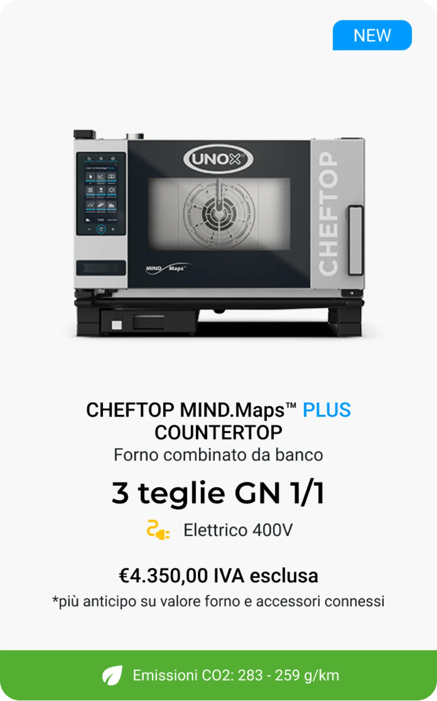
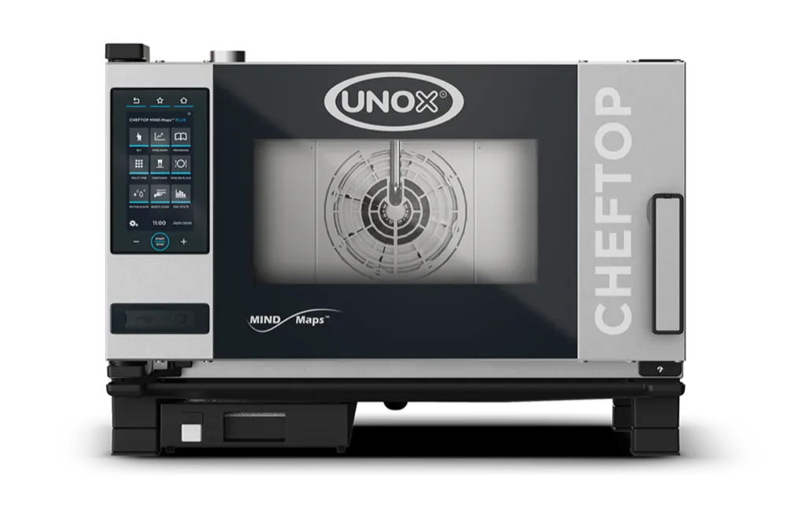
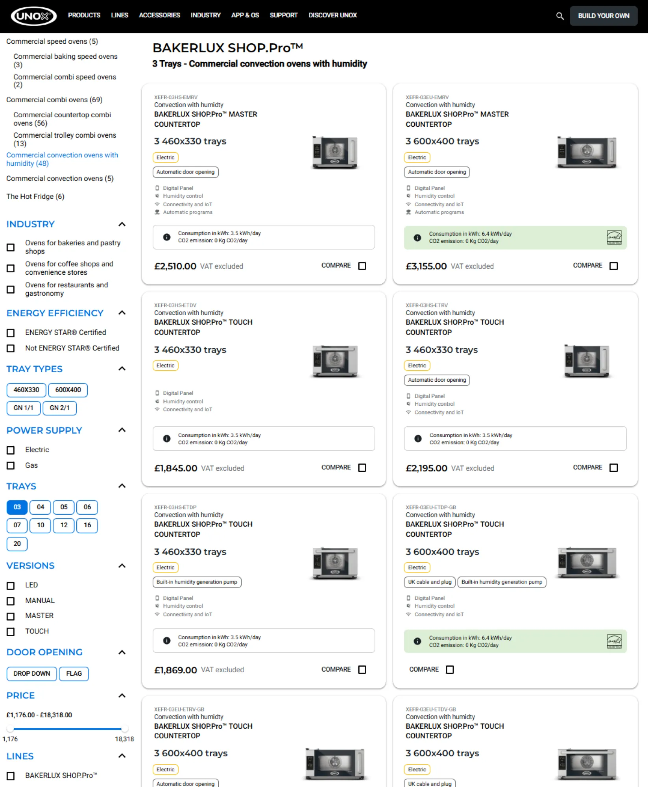
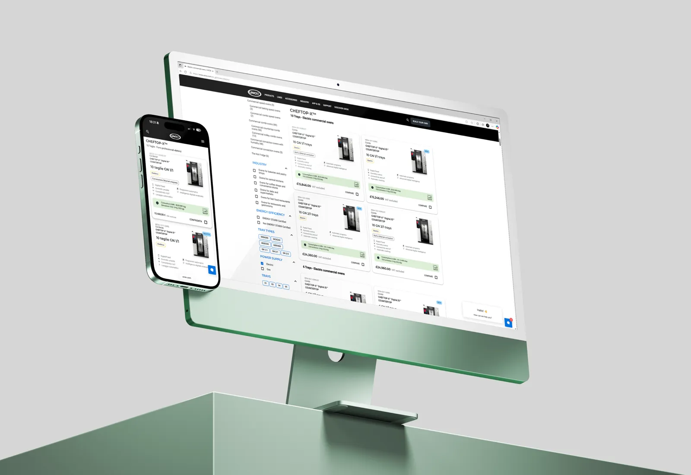

MEA Market User Research
Exploring an unfamiliar market to understand users, context, and product opportunities.
A qualitative field research trip to Dubai to observe how our professional ovens are used in a completely different environment. We gathered actionable insights to improve the physical product, the digital experience, and support materials, while creating personas that the whole company can rely on.
Problem
We didn’t really know MEA users — their workflows, challenges, or expectations. To make smart product decisions, we first needed real stories, real people, and real context.
Outcome
A strong set of qualitative insights, clear product priorities rooted in customer value, and a group of personas adopted by product, design, marketing, and sales teams.
Context & Challenge
Dubai was our playground for exploring a completely new market. The MEA region isn’t a main target yet, but it’s perfect to understand how users interact with our ovens in very different cultural and operational settings.
The challenge? We had no real understanding of MEA users, their workflows, pain points, expectations, or how they actually use our ovens. Making decisions without this knowledge would have been like cooking blindfolded, risky and inefficient.
We needed real stories, real people, and real context to guide product improvements.
Research Objectives
Our main goals were:
- Observe users in their natural environment and understand their behaviors and routines
- Identify pain points and opportunities for both physical and digital product improvements
- Define priorities based on customer value, not assumptions
- Find the correct material to share the knowledge to the R&D team
Secondary goal: building a strong standard for exploring new markets in the future.
My Role & Responsibilities
I led the research end-to-end, ensuring the project was strategically aligned, operationally smooth, and ethically sound. My responsibilities included:
Planning the research approach
selecting methods, designing templates, and balancing rigor with speed
Participant recruitment
selecting diverse points of sale, briefing managers and staff, ensuring comfort and consent
Fieldwork execution
conducting shadowing, Thinking Aloud sessions, semi-structured and explorative interviews
Data documentation and synthesis
creating reusable observation templates, interview guides, and notes for cross-team sharing
Scaling impact, create a STD
enabling teammates to replicate methods, providing guidelines for consistent qualitative research
This role was not just about collecting data, it was about translating observations into actionable insights, coaching others, and establishing a research approach that could scale across markets.
Context & Challenge
Dubai was our playground for exploring a completely new market. The MEA region isn’t a main target yet, but it’s perfect to understand how users interact with our ovens in very different cultural and operational settings.
The challenge? We had no real understanding of MEA users, their workflows, pain points, expectations, or how they actually use our ovens. Making decisions without this knowledge would have been like cooking blindfolded, risky and inefficient.
We needed real stories, real people, and real context to guide product improvements.
Research Objectives
Our main goals were:
- Observe users in their natural environment and understand their behaviors and routines
- Identify pain points and opportunities for both physical and digital product improvements
- Define priorities based on customer value, not assumptions
- Find the correct material to share the knowledge to the R&D team
Secondary goal: building a strong standard for exploring new markets in the future.
Designing for Clarity
By management decision, we couldn’t sacrifice SEO, so the huge number of products remained front and center for users.
The challenge then was to make each card as clear and understandable as possible, highlighting differentiating information effectively. Key improvements included:
- Optimizing the reading order of information
- Clarifying the naming of both range and differentiating features
- Improving the green label, which now also opens a detailed info popup
- Reducing image size, since larger images didn’t help users tell products apart
- Resizing cards to prevent them from being cut off on the standard vertical page
- Adding a “Compare” button to give users an easy way to directly contrast products, but we well talk about this later.
Old card →

New card →



Product comparator
By clarifying key information and making differentiating features immediately visible, we uncovered the need for a tool that could help users compare products side by side to complete solving their problems.
I followed the comparator project from start to finish, which you can check out by clicking below, and it became a real game-changer for both customers and the sales team.
Other projects

Comparator
A product comparator that helped customers navigate 1,000 look-alike products, cutting confusion in half and giving sales teams the tool they had been waiting for.

SPEED.Compact
Powering the future of fast food: a sleek, intuitive interface for accelerated ovens that boosts workflows, cuts training time, and delivers consistency across every location.

UNOX Design System
From 2023 to 2024, I led UNOX’s design system revamp, evolving it from a two-person library into a scalable, multi-platform design ecosystem.